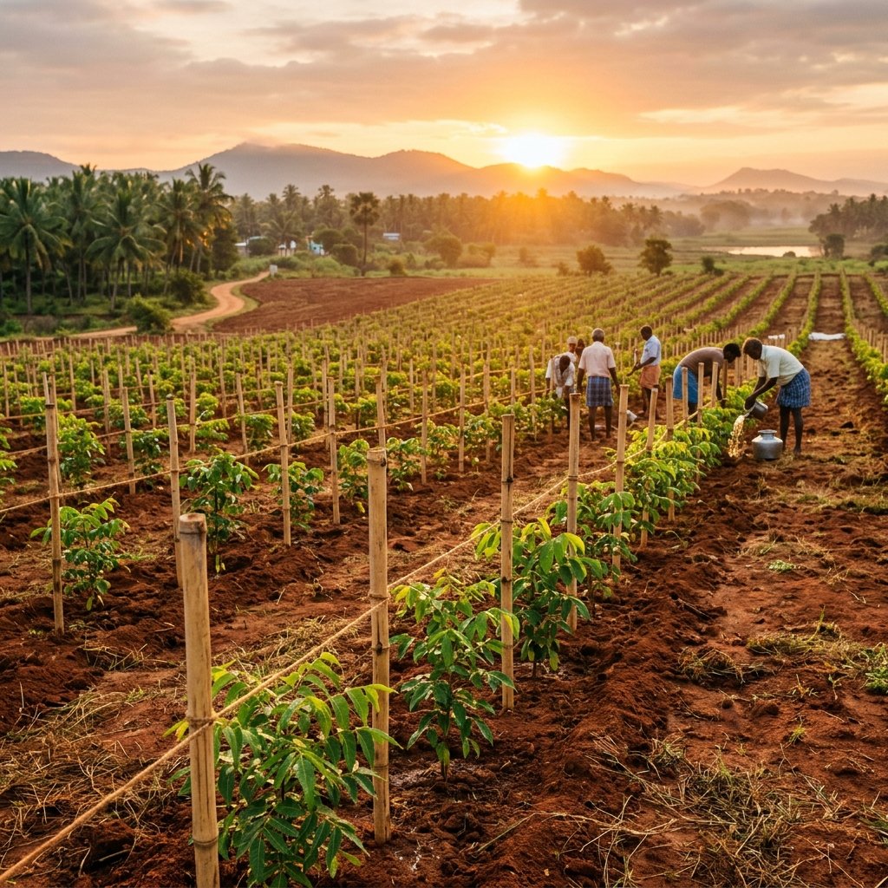
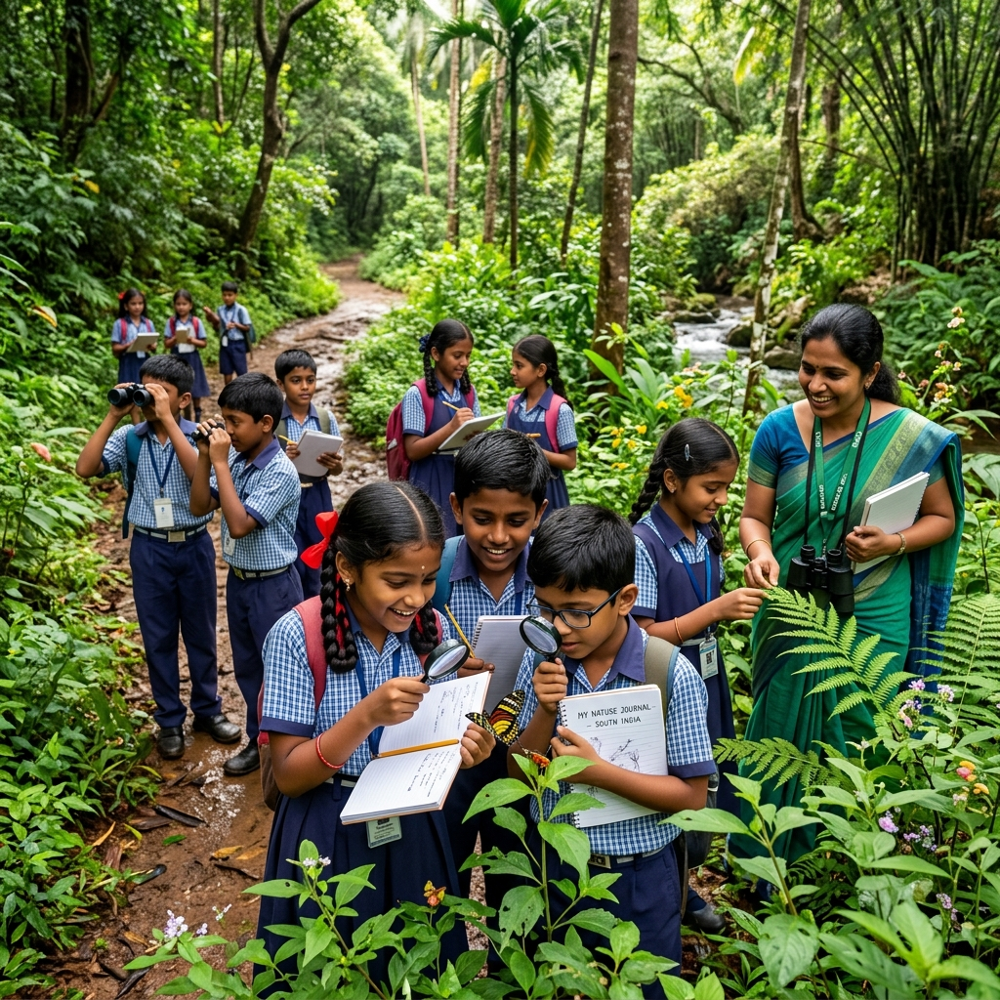
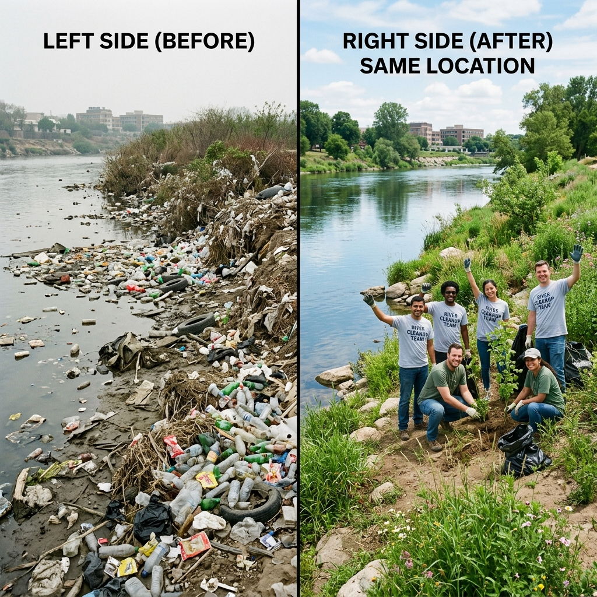

Jeevarasi — The Nature and Pet Sanctuary was founded as a Pondicherry-based Trust with a vision to bring people closer to the wild through experiential education, conservation, and safe coexistence between humans and animals.
Read Full Report
EducationOur preferred teaching approach helps guests understand conservation better through observation, touch, feel, and build experiences — reconnecting children and adults with the natural world.
Read More
EnvironmentThrough persistent community action and awareness programmes, we have restored over 200 hectares of land, collected 15+ tonnes of plastic waste, and planted 3+ lakh trees.
Read More Pet Sanctuary
Pet Sanctuary
Our pet sanctuary offers an experiential approach to learning about birds, reptiles, rodents, amphibians, fishes, and mammals — including exotic species not found in the Indian subcontinent.
Read More Nature Sanctuary
Nature Sanctuary
Our nature sanctuary preserves exotic plant species from around the world, educating enthusiasts about each plant and the need for conservation and protection.
Read More Education
Education
Our workshops educate enthusiasts on various species and their need of conservation, creating responsible citizen scientists who spread awareness at every level.
Read More Community
Community
Involving citizen scientists in research facilities to help in the awareness and conservation of specific species that are much needed in protection and conservation in nature.
Read More